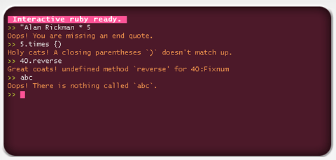

Erring in Hackety Hack 0.4 #
I’m not sure if there’s any fixing the arcane parse errors of Ruby, but here’s a stab at it. I need to do some examination of other IDEs to see what else is being done to fix this.
Anyway, some screen captures from H-ety H 0.4.
This release has a lot of fixes to the bundled Try Ruby. (Problems with the cursor, browser crashes, tutorial loading time.) But the main feature is the new friendly and condensed error messages.

These same error messages are expanded into HTML in the program editor:
The next release will work on highlighting the line which threw the error and some links in the exception to help pages for any involved classes or error messages.
Here’s another nice feature. The bundled Try Ruby has a progress bar for page fetching. I want this console to be irresistible to you lot!!
MenTaLguY
Yes, that’s the ticket. Highlighting is usually way better than manual hunts for line numbers.
danielmorrison
How about “the number 40” instead of “40:Fixnum”
MenTaLguY
Maybe. What do we do about
BignumandFloat, since the distinction is sometimes importaint?why
You tried to use the reverse method on a Fixnum object: the number 40.
MenTaLguY
Nearly. How about:
Something which reminds that the problem is a method not defined, anyway.
swaits
OMFG as much as my mind has been boggled by you in the past, this whole H-ety H thing has boggled it to new levels.
Fantastic work all around. I’m going to make my wife go through the lessons.
eli
$endwith “the end of the program”.The infant mortality rate of new programmers using HH just dropped to about half. Way to go, _why!
why
Oh, good one. Thanks, eli!
QuickRedFox
This is great! Making little ruby programmers, that will grow up to become big ruby programmers, that will make the libraries evolve and the ruby hosting plans drop in cost… Then… then… WORLD DOMINATION !! MOUAHAHAHAHAHAHAHA
RyanTMulligan
One of the little ruby programmers will write an AI program which will write the ruby libraries 24/7.
bombat
cool! can I have H-ety error messages in my normal ruby dev env? Rails? Perhaps a -H option on ruby.
Brings back fond memories of adding ‘hair’ messages (yes, with -H) to my C-ish compiler at uni. Mine was a dig at a friend, though. Yours is an awesome educational move.
Why don’t all compilers tell it like it is? The beginning of a new era for programming languages – the H-ety error message option for all compilers! It might help the kids bridge from H-ety to other languages. If nothing else, bring a dash of ruby/_why fun to less fortunate programmers out there…
Can’t wait for H-ety to hit linux…
revolelosnoc
sexy console! cheat sheet is nice too
mark
Great stuff. One minor nit: parenthesis is the singular form of perentheses.
g
The error message given “An end doesn’t match up” would be a lot clearer if the word end was highlighted, to show it’s actually a “command”, instead of an end of something else.
Shapeshifter
Shiny. Some of the messages are still slightly unclear, but Ruby needs something like this BADLY . Good stuff.